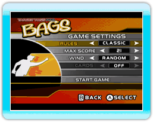

5 |
Introduction |
 |
« Target Toss Pro: Bags » est un nouveau jeu vidéo basé sur le jeu du « bean bag toss » (lancer des sacs) - la sensation la plus géniale qui se joue dans les cours et lors des fêtes d’avant-match. Le jeu de « Bags » (sacs), ou « Cornhole » comme on l’appelle dans certains coins du pays, a été créé dans le Midwest dans les années 60 et depuis lors il fait partie des réceptions en plein air d’un bout du pays à l’autre. C’est un jeu qui malgré son aspect simple est extrêmement compétitif; les joueurs tentent de lancer des « beanbags » ou sacs dans un trou se trouvant sur une plate-forme légèrement surelevée ou « boîte » pour gagner des points, comme au fer à cheval. Que ce soit à une fête d’avant-match ou à un barbecue, le jeu est devenu un point fort des réunions et le bruit sourd caractéristique des sacs percutant la boîte est devenu la « bande sonore » signalant les festivités.
 Le pointage du « Cornhole » classique oppose deux joueurs ou deux équipes l’une contre l’autre. Les joueurs obtiennent 3 points par sac lancé dans le trou et 1 point par sac arrivant sur la boîte. Toutefois, les points sont calculés à la fin de chaque manche de telle manière qu’un seul joueur reçoit des points, d’après leurs points « en surplus » pour cette manche. Par exemple, si le joueur Nº 1 a 6 points pour une manche et le joueur Nº 2 a 9 points, la seule personne qui reçoit des points pour cette manche est le joueur Nº 2, et il reçoit 3 points (ses 9 points moins les 6 points de l’autre joueur). Si l’une des manches se termine par un match nul, aucun des joueurs n’obtient de points. On joue autant de manches qu’il est nécessaire jusqu’à ce qu’un des joueurs atteigne 21 points (ou un autre chiffre convenu). |
 « Target Toss Pro: Bags » est une nouvelle formule du jeu classique, comportant une nouvelle stratégie de récompense supplémentaire pour les joueurs qui font « siffler » le sac au lieu de simplement l’introduire dans le trou. Les joueurs marquent 5 points pour un « sifflement », 3 points pour un coup qui touche la boîte avant d’entrer dans le trou, et 1 point s’il arrive sur la boîte. Chaque joueur peut lancer le sac 4 fois par manche, et le jeu comporte 6 manches. Le gagnant est celui qui a remporté le plus de points à la fin.
« Target Toss Pro: Bags » est une nouvelle formule du jeu classique, comportant une nouvelle stratégie de récompense supplémentaire pour les joueurs qui font « siffler » le sac au lieu de simplement l’introduire dans le trou. Les joueurs marquent 5 points pour un « sifflement », 3 points pour un coup qui touche la boîte avant d’entrer dans le trou, et 1 point s’il arrive sur la boîte. Chaque joueur peut lancer le sac 4 fois par manche, et le jeu comporte 6 manches. Le gagnant est celui qui a remporté le plus de points à la fin.
 |
 |
 |